See the mistake.
Clear underlines and explanations show where to focus.
Write it yourself in French, one try at a time.
Choose the underlined phrase to see the rule.
A website illustration of Coquille's correction flow.
Start a journal entry and write about your day in French. If Coquille flags a phrase, tap it to see the rule. Try a correction yourself or reveal the fix when you need it. With no errors left to address, you can listen to your entry in French and read it in English.
Add a painting to any journal entry. A red dot marks an entry that still has mistakes to fix.
Mistakes are underlined and the fix waits until you ask.
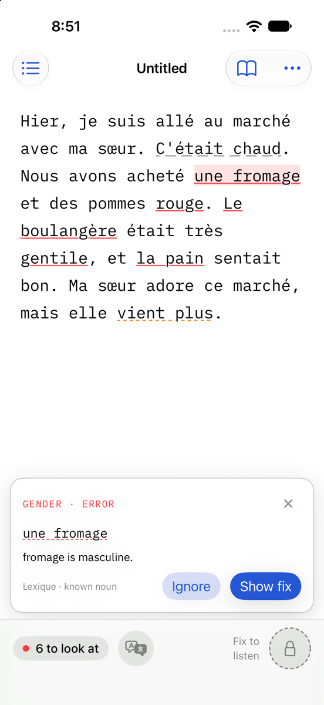
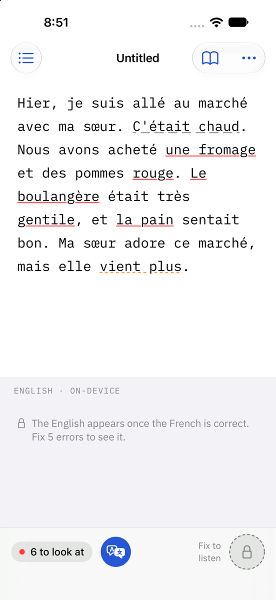
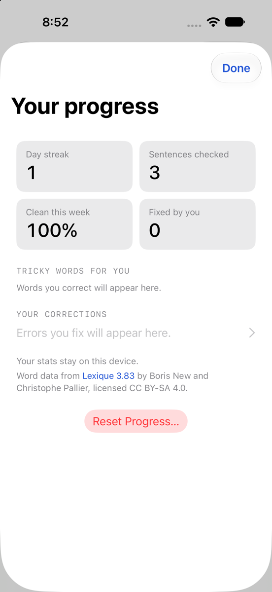
Write freely, then work through each underlined mistake. Coquille shows you the rule and keeps the correction hidden until you ask.
Clear underlines and explanations show where to focus.
Read the rule, work out the answer, and reveal the fix only when you want it.
Save your writing, revisit your progress, and build confidence over time.
Switch to the calendar to see the paintings you've added throughout the month. Tap a day to open that entry.
Each entry's date comes from its file name, and its painting from a //: tableau line, so the calendar is built from your own writing. It also lists the French words of the month's paintings.
Put a review marker above a sentence you're unsure about. Share your draft as text with a French speaker, then use their feedback to revise.
A sentence can be correct but still sound unusual. Add notes that Coquille won't check: start a line with // or wrap a passage in /* */ and Coquille leaves it alone. Turn on Show suggestions to see phrases that could sound more natural.
Type //: and pick a keyword. Ask an instructor to check a tense, ask a question, or wonder if a line is natural. Flag a passage as todo, or choose tableau to set the entry's painting. Share Text sends your writing with its notes.
Bold a date or a heading and it carries into the English view too. Our Markdown also supports bullets.
676 complete phrases in 17 situations, from greetings and the café to directions, travel and journal starters. Each one plays aloud and many carry a one-line note on the pattern.
Type a phrase yourself to practice it, then make it your own. Coquille checks it as you write.
Illustrative sample rows. The app's phrase list is much larger.
Coquille brings together the satisfaction of learning something yourself and the joy of sharing what you've learned with someone else.
Choose a painting, write a personal message in French, and share a postcard with someone you care about. The postcard includes your painting, your French, an English translation, and a dated postmark.
Coquille uses modern machine learning to bring back something wonderfully old-fashioned: the pleasure of writing someone a personal letter.
Coquille ships with more than 100 custom paintings, with new ones added all the time. Choose a painting that fits your day. Inspired by French artists, each painting teaches you a French word, too.
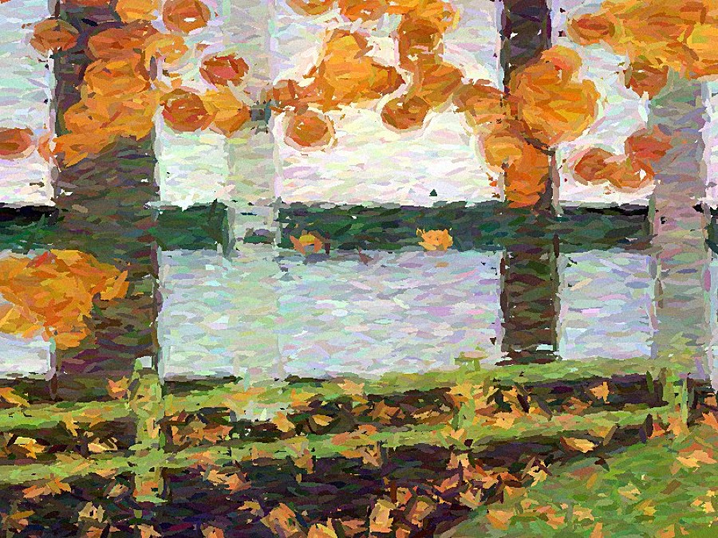
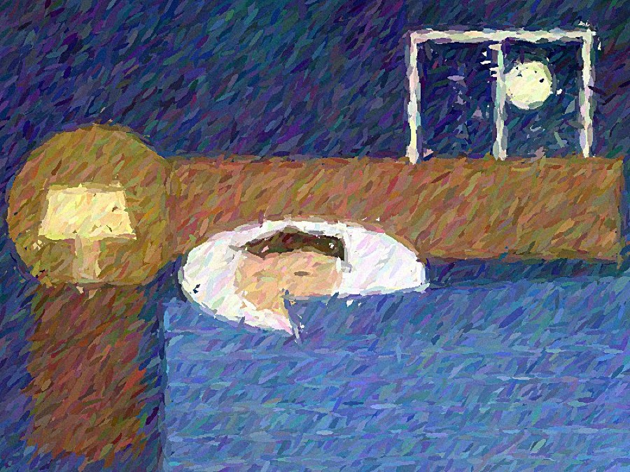
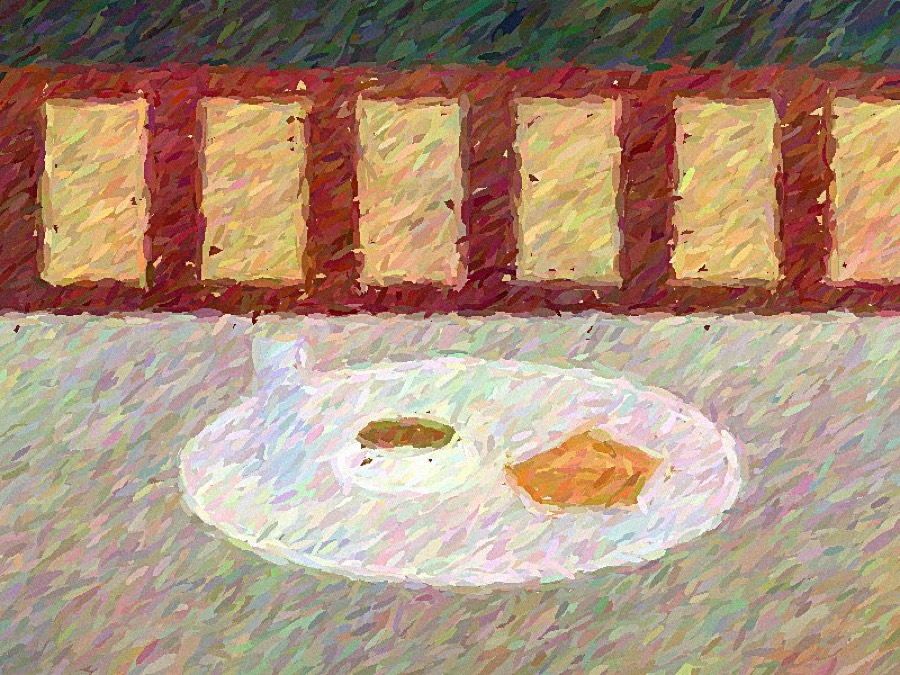
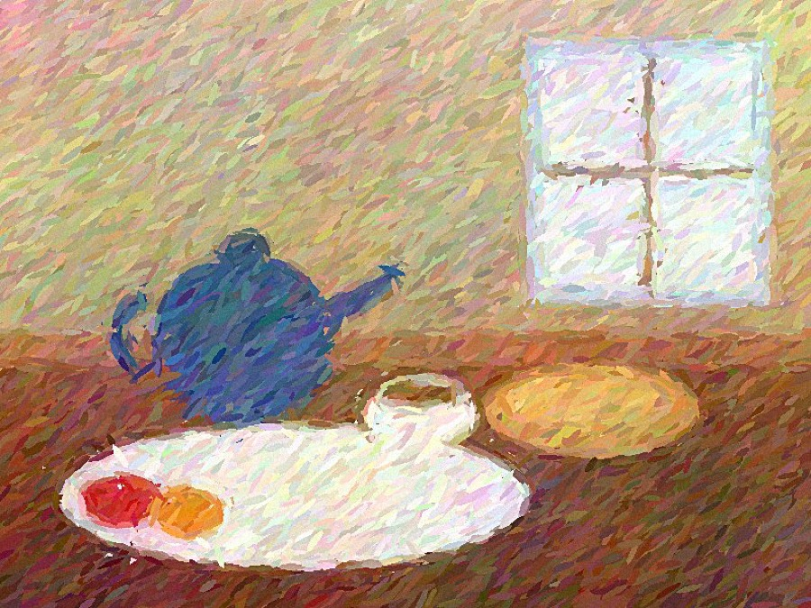
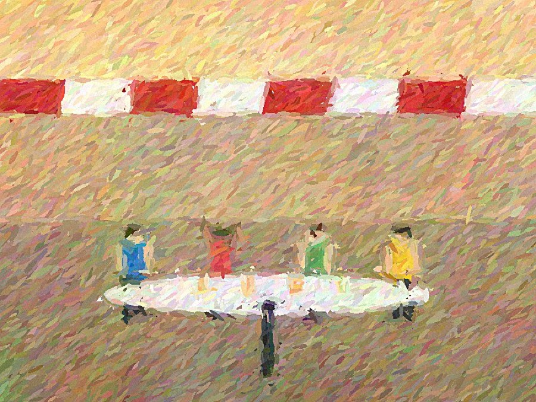
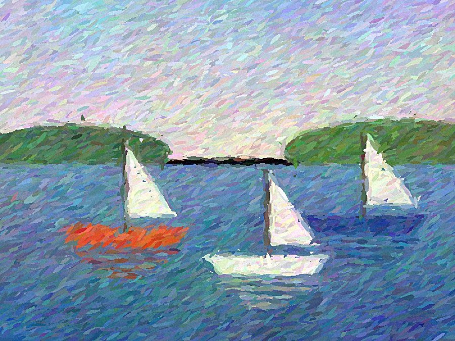
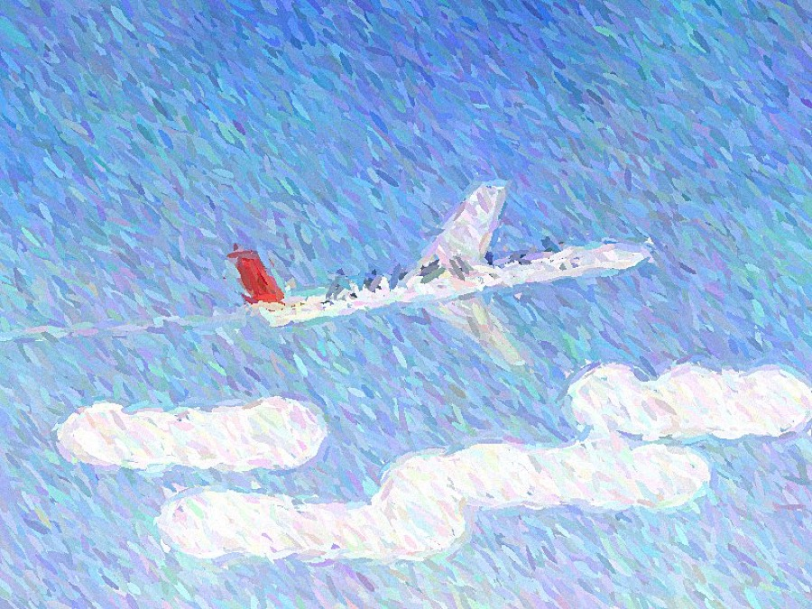
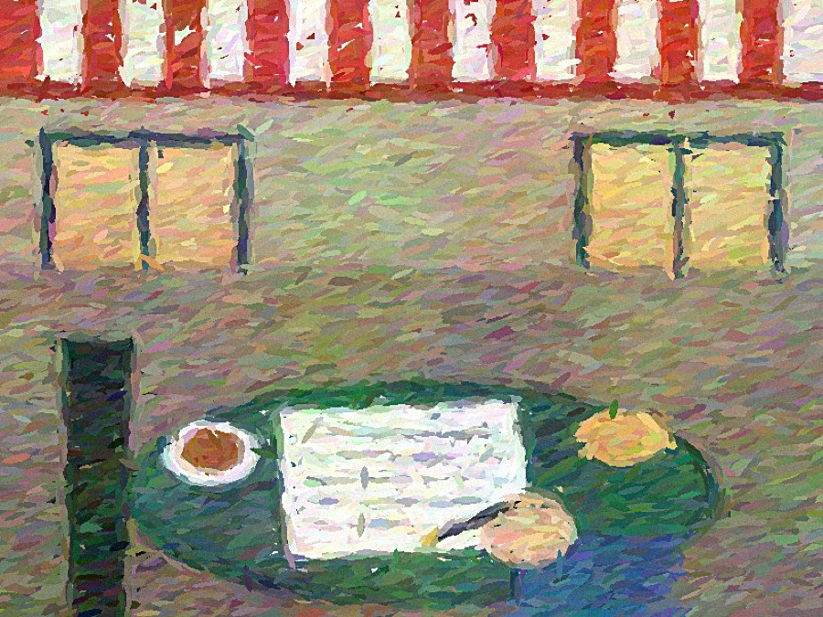
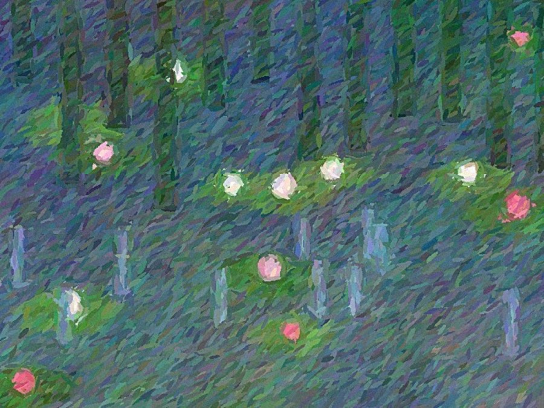
Spelling and grammar checks run on-device, with Quiver and Apple frameworks. Works offline, with no account needed. Your stats stay private.
Every entry is an ordinary text file you can rename, copy or export. One ZIP backs up the whole journal and restores on any device.
With a little help from Apple Intelligence, Coquille explains how phrases work in the French you write.
Message me on LinkedIn to express interest in early testing.